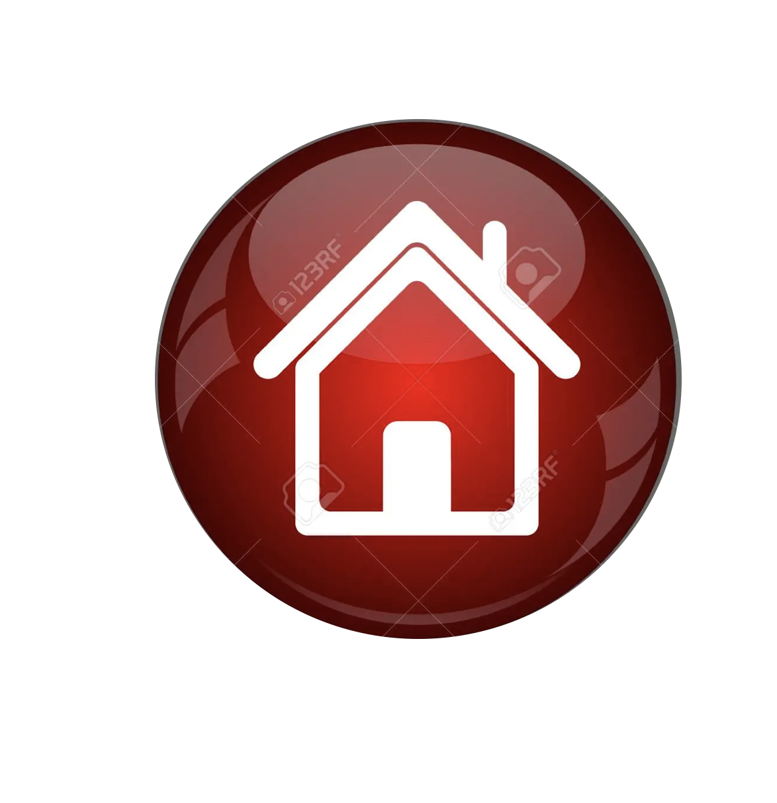
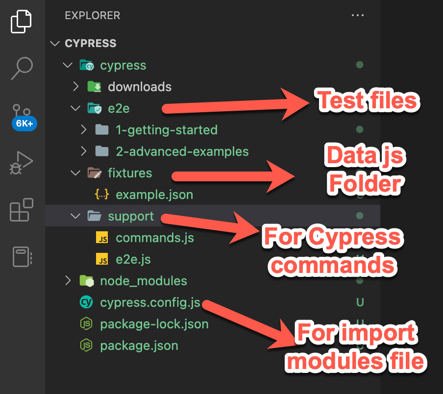
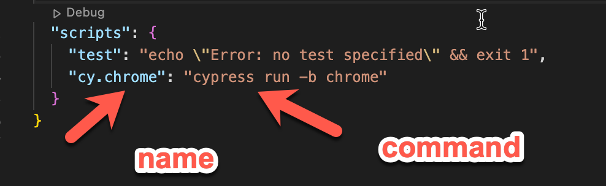

Cypress installation
brew
node: brew install npm
open a terminal in you project folder
npm init
cypress: npm install cypress --save-dev
check cypress version: npm cypress -version)
open cypress(inside your project): npx cypress open
once cypress is open, create a new empty spect or
modify your test in visual code
Cypress documentation
Cypress files structure

e2e.js file, works for inherit object or flows
Usefull scripts for your project in the package.json file
script for run your project

to run execute in the project path: npm run cy.chrome